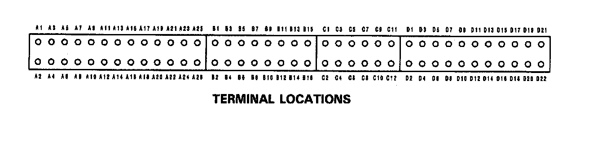
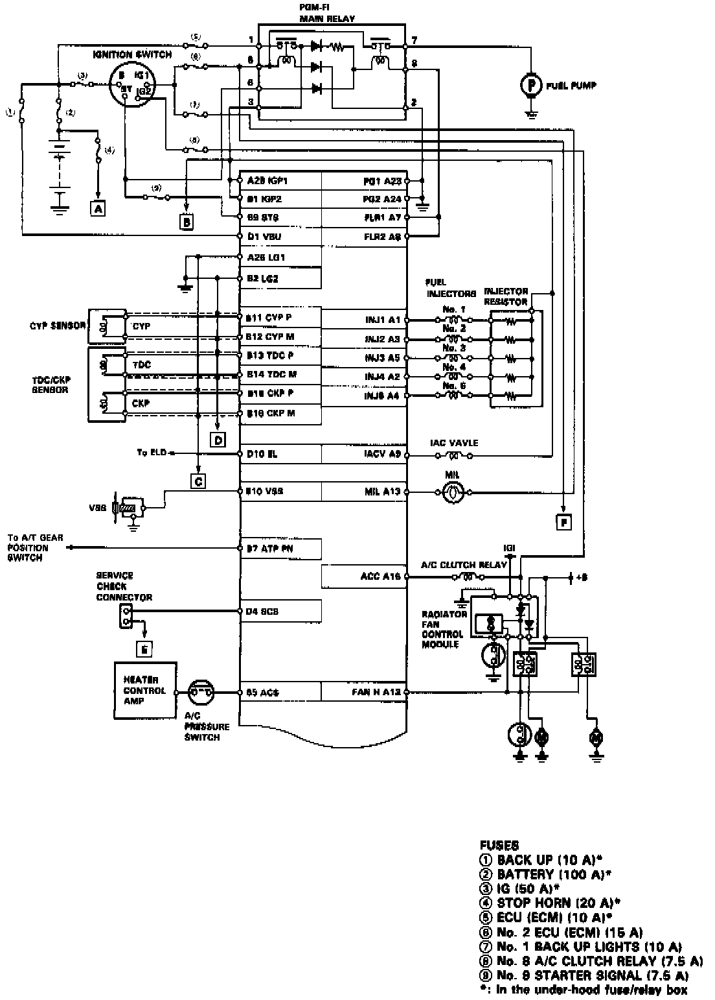
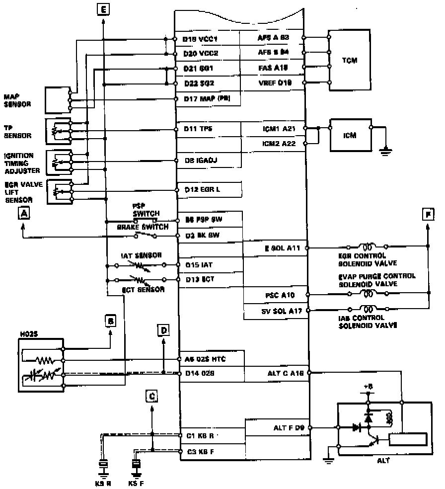

Operation CHARM
: Car repair manuals for everyone.
Home
>>
Acura
>>
1993
>>
Vigor L5-2451cc 2.5L SOHC G25A4 FI
>>
Repair and Diagnosis
>>
Diagrams
>>
Connector Views
>>
Powertrain Management
>>
Engine Control Module
Engine Control Module
ECM Connector View and Legend


